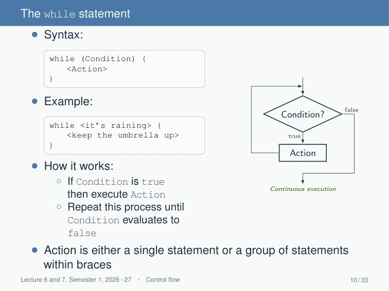
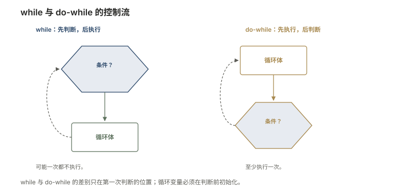

SOE105 · 第 6 章
控制流：循环与循环设计
Control Flows: Repetitions & Loop Design
虚线下划线为术语；悬停查看中文、英文与释义，完整词典见“术语”。
本章目录
本讲从快捷赋值与自增自减入手，系统讲三种循环：while、for、do-while，比较它们的入口/出口条件与适用场合，并给出循环设计的两种经典模式——哨兵控制与标志控制。
本章要点
- 快捷赋值 +=、-=、*=、/=、%= 把“运算 + 存回”合成一步。
- ++k 先自增再使用，k++ 先使用再自增，差别只在表达式取值时显现。
- 循环四要素：初始化、条件判断、循环体、状态更新。
- for 适合次数已知的循环，while 适合次数未知或依赖输入的循环。
- while 是入口控制，可能一次都不执行；do-while 是出口控制，至少执行一次。
- 循环计数器初始化错、漏更新、条件写错都会导致无限循环。
- 嵌套循环中内层循环完整跑完，外层才推进一步。
- 哨兵循环用特殊值终止，标志循环用布尔变量记录“该停了”。
6.1 快捷赋值与自增自减
C/C++ 提供一组快捷赋值shortcut assignment运算符，把“对变量做运算、再把结果存回该变量”合并为一步：+=、-=、*=、/=、%=。例如 i += 4 等价于 i = i + 4；a *= 2 等价于 a = a * 2；change %= 100 等价于 change = change % 100。
int i = 3;
i += 4; // i = i + 4, now 7
double a = 3.2;
a *= 2; // a = a * 2, now 6.4
int change = 1265;
change %= 100; // change = change % 100, now 65自增 ++ 与自减 -- 把变量加一或减一。真正的考点是前置与后置的差别：++k 先自增，表达式取到的是自增后的值；k++ 先取表达式的值，再自增。
int k = 4;
k++; // k = 5
++k; // k = 6
int i = k++; // i is 6, k is 7
int j = ++k; // j is 8, k is 8把这条规则放进条件里，结果会不同：int x = 5, y = 6; 若写 if (++x == y)，x 先变 6，条件为真；若写 if (x++ == y)，比较用的是 5，条件为假，但 x 之后仍变成 6。
与短路求值相遇时更要注意。if (++x < y && y-- > 8) 中，第一项成立（6 < 10），第二项用 y 的原值 10 比较（10 > 8 成立），之后 y 才减为 9；而 if (x++ == 5 || ++y == 11) 中第一项已为真，++y 根本不会被求值，y 保持 10。
L06–07 p.4–8
6.2 循环的四要素
循环loop（又称迭代结构）提供“控制一段语句执行多少次”的能力。三种构造是 while、do-while、for，但它们的骨架相同，都包含四件事：
- 初始化变量（计数器、累加器、标志）；
- 条件判断：为真则继续；
- 执行动作（循环体）；
- 更新状态，使条件最终会变为假。
第 4 条是循环能停下来的唯一保证。讲义把这一模式画成一个环：初始化 → 判断 → 动作 → 更新 → 再判断，直到条件为假才离开。三种循环的差别，只在于这四件事分别写在哪里、判断在动作之前还是之后。
Clean vector cycle diagram of a loop: a vertical entry arrow into a box labelled Initialization, then a diamond labelled Condition?, a true branch into a box labelled Action(s), then a box labelled Update, and an arrow looping back to the condition diamond; the false branch exits to the right labelled Exit loop. Flat 2D, thin 1.5 px strokes, muted slate blue and warm grey palette, white background, English labels, no cartoon, no gradient, no shadow.
L06–07 p.11
6.3 while 语句
while 的语法是 while (Condition) { Action }。条件为真就执行动作，然后重新判断，直到条件为假。动作可以是单条语句，也可以是花括号内的一组语句。
求阶乘是最典型的例子：factorial 初始化为 1，n 初始化为 1，循环条件 n <= number，循环体做 factorial *= n 与 n++。
int number, factorial, n;
cout << "Enter number: ";
cin >> number;
factorial = 1;
n = 1;
while (n <= number) {
factorial *= n;
n++;
}
cout << "The factorial of " << number
<< " is " << factorial << endl;同样的骨架可以求 2 的幂：result 初始化为 1，循环体做 result *= 2，n++。差别只在累乘的因子。
while 还能处理“事先不知道有多少个输入”的情形，靠输入操作本身的真假作条件：while (cin > value) 在成功读入时继续，遇到文件结束（CTRL-D）时停止。循环结束后再用 listSize > 0 判断是否真的读到过数据，避免除以零。
int listSize = 0;
int value;
double sum = 0.0;
cout << "Provide a list of numbers (CTRL-D to stop)" << endl;
while (cin >> value) {
sum += value;
listSize++;
}
if (listSize > 0) {
cout << "Sum: " << sum << endl;
double average = sum / listSize;
cout << "Average: " << average << endl;
} else {
cout << "No list to average!" << endl;
}
L06–07 p.12–15
6.4 for 语句
for 把四要素压进一行：for (ForInit; ForCondition; PostExpression) { Action }。执行顺序是：先执行 ForInit 一次；当 ForCondition 为真时执行 Action，再执行 PostExpression，然后回到条件判断。
int i;
for (i = 0; i <= 20; i++) {
cout << "i is " << i << endl;
}用 for 重写阶乘，初始化 n = 1 移入 ForInit，n++ 移入 PostExpression，循环体只剩 factorial *= n：
factorial = 1;
for (n = 1; n <= number; n++) {
factorial *= n;
}这个对照说明 for 与 while 可以互相改写：for 的三段分别对应 while 的“循环前初始化”“循环条件”“循环体末尾的更新”。改写的对应关系，是读懂两种写法的钥匙。
for 也支持空条件写成 for (;;)，表示无限循环，靠循环体里的 break 退出——处理未知长度的输入时常用这种写法，把读入失败作为退出条件。
for (;;) {
if (!(cin >> value)) {
break;
}
sum += value;
listSize++;
}L06–07 p.16–21
6.5 for 与 while 的分工
讲义用一张对照表区分两者，要点可以归为四组：
| 维度 | for | while |
|---|---|---|
| 使用场合 | 迭代次数已知 | 迭代次数未知 |
| 初始化位置 | 可在循环语句内或外 | 总在循环外 |
| 状态更新 | 循环体执行后统一更新 | 可在循环体前或后更新 |
| 条件形式 | 通常是关系表达式 | 可以是表达式或非零值 |
两者都是入口控制循环entry controlled loop：条件在循环体之前检查，因此循环体可能一次都不执行。这一点与 do-while 相反。
选择上的经验是：求和、求积、计数这类“次数由范围决定”的循环用 for；依赖用户输入、读到某个值才停的循环用 while。前者的三段式让“起点、终点、步长”一目了然，后者把“读入—判断”写在条件里更自然。
L06–07 p.19
6.6 do-while 语句
do-while 的语法是 do { Action } while (Condition);，注意结尾的分号。执行顺序是：先执行一次动作，再判断条件；为真则回到动作，为假则退出。
factorial = 1;
n = 1;
do {
factorial *= n;
n++;
} while (n <= number);它被称为出口控制循环exit controlled loop：条件在循环体之后检查，因此循环体至少执行一次。与 while 的差别可以用一个边界情形检验——若初始条件就为假（例如 number = 0），while 版本一次都不执行，do-while 版本会先执行一遍，再退出。

绘图提示词
Clean vector side-by-side comparison of two loop flowcharts. Left: while loop with Condition? diamond before the Action box, true branch back to the condition, false branch exiting, labelled entry controlled. Right: do-while loop with Action box first, then Condition? diamond, true branch back to the action, false branch exiting, labelled exit controlled. Flat 2D, thin 1.5 px strokes, muted slate blue and warm grey palette, white background, English labels, no cartoon, no gradient, no shadow.
讲义还指出一个细节：while 循环中条件里的变量必须在循环之前初始化；do-while 中该变量可以在循环之前初始化，也可以在循环体内初始化，因为首次判断发生在动作之后。
L06–07 p.22–25
6.7 如何选择循环
讲义给出三条选择原则：
- for：通常最适合求和、求积与计数循环，因为次数由范围直接决定；
- while：想重复一个动作但不知道确切次数时；处理用户输入时；存在“动作不应被执行”的情形时；
- do-while：动作至少应执行一次时；其余场合与 while 类似。
判断“该不该用 do-while”的一个实用问题：如果第一次判断就可能为假，这个动作还需不需要做？需要，就用 do-while；不需要，就用 while。
讲义还给出停止循环的两条路径：循环前就知道迭代次数，用 for；需要在每次迭代前或后测试用户控制的条件，用 while 或 do-while。
L06–07 p.27–29
6.8 常见循环错误
讲义列出几类典型错误，每一类都对应一个具体的失效机制。
第一类是浮点比较导致的无限循环infinite loop：while (balance != 0.0) { balance = balance - amount; } 中，balance 可能因为浮点误差永远不精确等于 0.0，循环永不结束。
第二类是计数器初始化错误：求和变量应初始化为 0，求积变量应初始化为 1。把乘积初始化为 0，无论乘什么都是 0；把和初始化为 1，结果会多出 1。
第三类是漏更新：循环体里没有改变条件中出现的变量，条件永远为真。
第四类是边界写错：n < 10 与 n <= 10 相差一次迭代，处理数组下标时这一差异直接决定是否越界。
讲义在“迭代要点”中把预防措施归纳为三句：循环要有明确目的（确实需要重复执行的事）；正确初始化循环计数器；确保存在最终能停止循环的语句。
L06–07 p.28–30
6.9 嵌套循环
嵌套循环nested loop是循环里再放循环，原理与嵌套 if 类似。执行规则是：外层每推进一步，内层都要完整跑完一轮。
乘法表的例子最能说明这一点：外层 i 从 1 到 10 控制行数，内层 j 从 1 到 10 打印每行的 10 个数，内层结束后输出一个换行，外层才进入下一行。
int i; // outer loop counter
int j; // inner loop counter
for (i = 1; i <= 10; i++) {
for (j = 1; j <= 10; j++) {
cout << i * j << " ";
}
cout << endl; // newline at the end of each row
}另一个例子是“计算每个学生 8 次实验的平均分”：外层用 do-while 遍历学生（问“还有下一个吗”），内层用 for 累加 8 次成绩。关键细节是 tscore 必须在外层循环内部、内层循环之前重置为 0——若放在外层之外，分数会跨学生累加。
讲义最后给出一个打印菱形图案的挑战题，只用星号与空格，靠嵌套循环控制每行的空格数与星号数。这类题考的不是语法，而是“把图形规律翻译成两个计数器的范围”。
L06–07 p.32–35
6.10 循环设计模式：哨兵控制与标志控制
讲义最后转向“怎么设计一个循环”，而不是“怎么写出循环语法”。开篇是一个游泳者的例子：她每划一次把与目标的距离缩短 2/3 个身长，直到近到能触到目标，要求每次划水后打印距离。循环设计写成三步：初始化距离；当条件仍成立时，打印距离并更新距离。这里的重点不是公式，而是“先初始化、再判断、在循环体内更新”这一固定骨架。
哨兵控制循环（sentinel-controlled loop）：用一个特殊值表示“输入结束”。设计步骤是：先读第一个值；当该值不等于哨兵时，处理它，再读下一个值。
const int sentinel = -1;
int sum = 0, score;
cout << "Enter the first score: " << endl;
cin >> score;
while (score != sentinel) {
sum += score;
cout << "Enter next score: " << endl;
cin >> score;
}
cout << "Sum = " << sum << endl;结构上有两个易错点：第一次读入必须在循环之前（否则没有值可判断）；循环体内必须再读一次（否则条件永远不变）。
标志控制循环（flag-controlled loop）：当终止条件不止一个、且不能在同一时刻检查时，用一个布尔标志flag记录“是否该停”。设计步骤是：把标志初始化为 false；当标志仍为 false 时处理；一旦某个终止条件出现，就把标志置为 true。
讲义的例子是从终端读一个十进制数，遇到非数字字符或读到数字 0 就停。两个条件发生的时机不同，无法写成一个判断，于是用 terminate 标志：读到非数字就置 1；读到数字则先换算并入 num = num * 10 + digitValue，若该字符是 '0' 再置 1。
int num = 0, digitValue, terminate = 0; // 0 means false
char ch;
while (!terminate) {
cin >> ch;
if (isdigit(ch)) { // from ctype.h
digitValue = int(ch) - int('0');
num = num * 10 + digitValue;
if (ch == '0')
terminate = 1; // true
} else {
terminate = 1; // true
}
}
cout << "num: " << num << endl;两种模式的共同点是“把终止判断集中到一个地方”：哨兵把终止编码进数据值，标志把终止编码进状态变量。前者适合“输入里有明确的结束标记”，后者适合“有多个互不相同的结束原因”。
L08a p.3–10